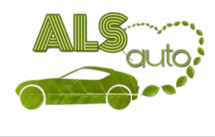
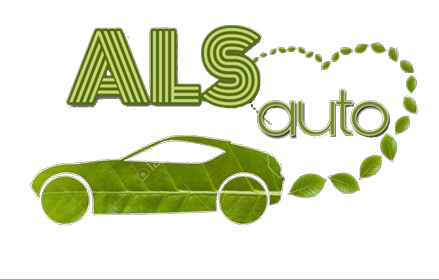
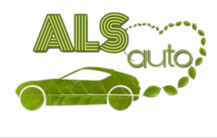
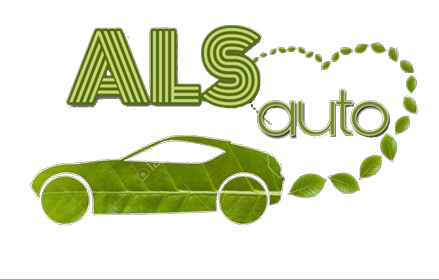

ALS Auto

 



Pon-Pet:08:00-16:00
Sub:08:00-13:00
Nedjelja i praznici neradni
XVIII hrvatske brigade, Tuzla 75000
Zašto električna vozila sve više postaju “in”? Naime, postoje mnoge prednosti kod naših vozila; jeftinija su za održavanje, za putovanja bilo na duge ili kraće relacije, te su naročito pogodni za okoliš. Mreža punionica koje vam omogućavaju da napunite svoj automobil tokom putovanja sve je šira. Nalaze se uz važne ceste, na benzinskim postajama i u brojnim „javnim zgradama“. Samo isplanirajte svoje putovanje na karti i odaberite punionicu koja vam najbolje odgovara. Unazad 3 godine poslovnica ALS auto uspješno posluje na teritoriji Bosne i Hercegovine, čak i šire. Striktno uvozimo kvalitetna i provjerena vozila iz Njemačke, Japana, Italije i Češke. Svi naši kupci su izrazito zadovoljni uslugama i besprijekornom kvalitetom naših vozila.
Dizajnirala: Omerović Lejla, 2023.god.